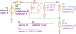

"VampNoise"
.source V1
.detector V_out
.param A_v=20 R_s=600
R1 out 2 R value={(A_v-1)*R_a} noisetemp={T} noiseflow=0 dcvar=0 dcvarlot=0
R2 2 0 R value={R_a} noisetemp={T} noiseflow=0 dcvar=0 dcvarlot=0
R3 1 3 R value={R_s} noisetemp={T} noiseflow=0 dcvar=0 dcvarlot=0
V1 1 0 V value=0 noise=0 dc=0 dcvar=0
X1 3 2 out 0 N_noise sv={S_v} si={S_i}
.end
| RefDes | Nodes | Refs | Model | Param | Symbolic | Numeric |
|---|---|---|---|---|---|---|
| I1_X1 | 3 2 | I | noise | $S_{i}$ | $S_{i}$ | |
| value | $0$ | $0$ | ||||
| dc | $0$ | $0$ | ||||
| dcvar | $0$ | $0$ | ||||
| N1_X1 | out 0 3_X1 2 | N | ||||
| R1 | out 2 | R | value | $R_{a} \left(A_{v} - 1\right)$ | $19.0 R_{a}$ | |
| noisetemp | $T$ | $300.0$ | ||||
| noiseflow | $0$ | $0$ | ||||
| dcvar | $0$ | $0$ | ||||
| dcvarlot | $0$ | $0$ | ||||
| R2 | 2 0 | R | value | $R_{a}$ | $R_{a}$ | |
| noisetemp | $T$ | $300.0$ | ||||
| noiseflow | $0$ | $0$ | ||||
| dcvar | $0$ | $0$ | ||||
| dcvarlot | $0$ | $0$ | ||||
| R3 | 1 3 | R | value | $R_{s}$ | $600.0$ | |
| noisetemp | $T$ | $300.0$ | ||||
| noiseflow | $0$ | $0$ | ||||
| dcvar | $0$ | $0$ | ||||
| dcvarlot | $0$ | $0$ | ||||
| V1 | 1 0 | V | value | $0$ | $0$ | |
| noise | $0$ | $0$ | ||||
| dc | $0$ | $0$ | ||||
| dcvar | $0$ | $0$ | ||||
| V1_X1 | 3 3_X1 | V | noise | $S_{v}$ | $S_{v}$ | |
| value | $0$ | $0$ | ||||
| dc | $0$ | $0$ | ||||
| dcvar | $0$ | $0$ |
| Name | Symbolic | Numeric |
|---|---|---|
| $A_{v}$ | $20$ | $20.0$ |
| $R_{s}$ | $600$ | $600.0$ |
| $T$ | $300$ | $300.0$ |
| Name |
|---|
| $S_{v}$ |
| $R_{a}$ |
| $S_{i}$ |
Go to VampNoise_index
SLiCAP: Symbolic Linear Circuit Analysis Program, Version 2.0.1 © 2009-2024 SLiCAP development team
For documentation, examples, support, updates and courses please visit: analog-electronics.tudelft.nl
Last project update: 2024-10-20 16:59:00